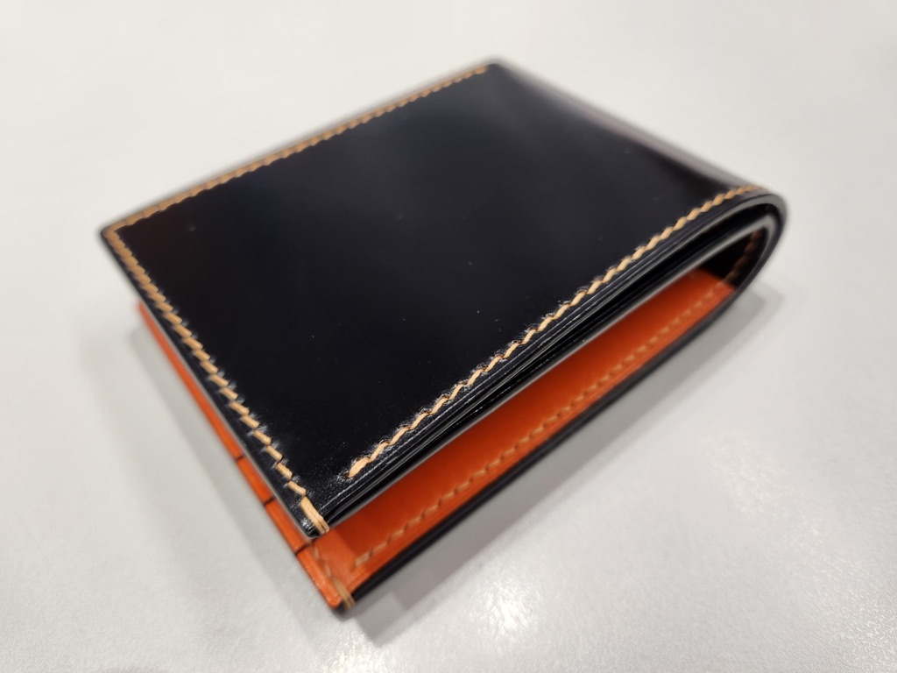
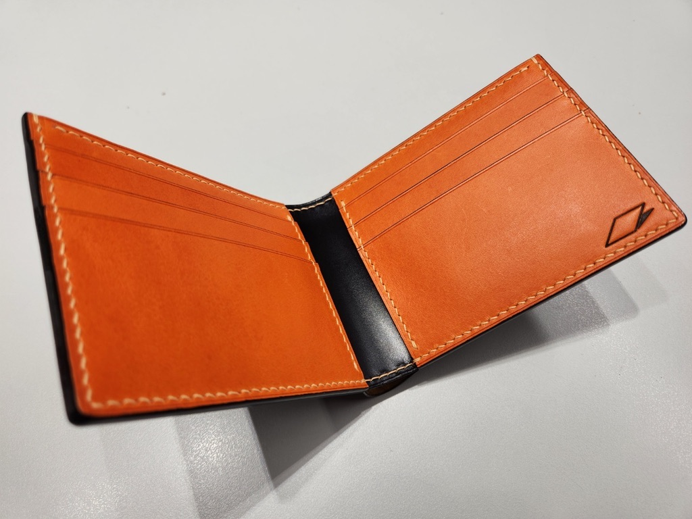
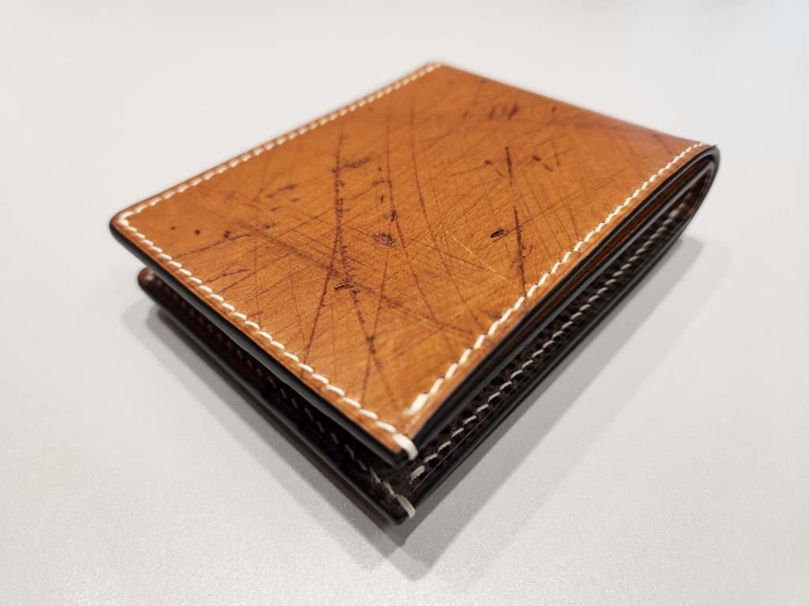
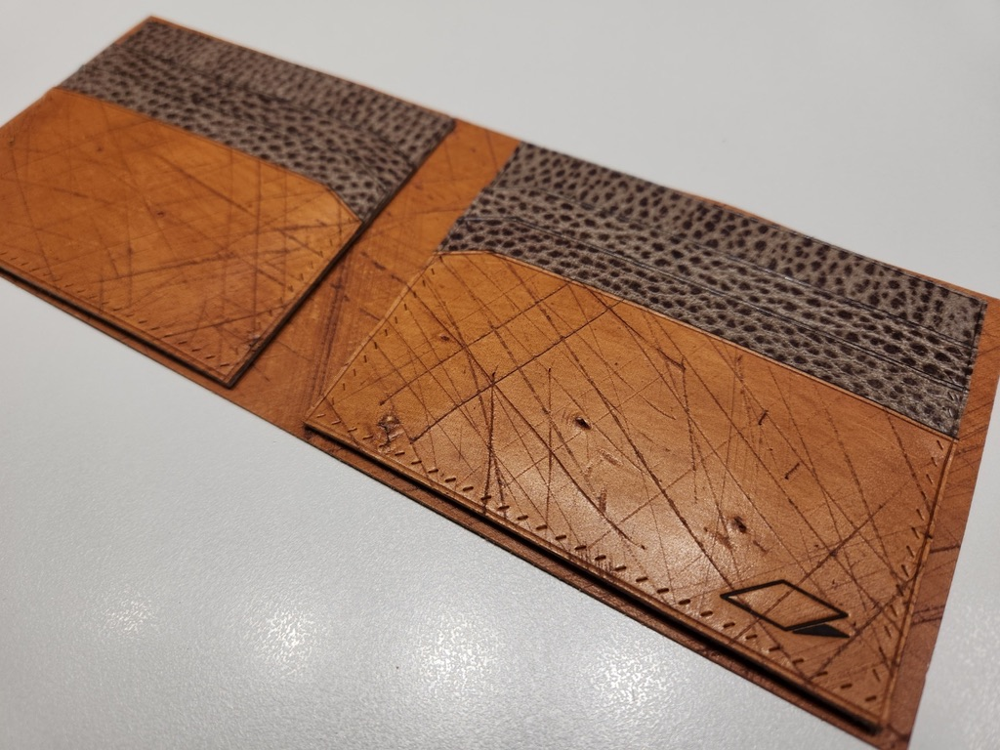
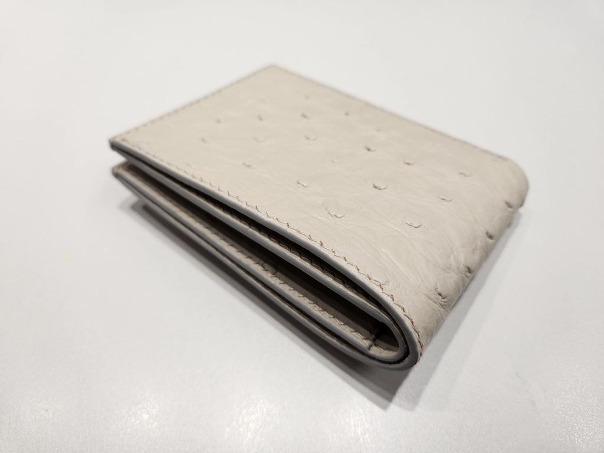
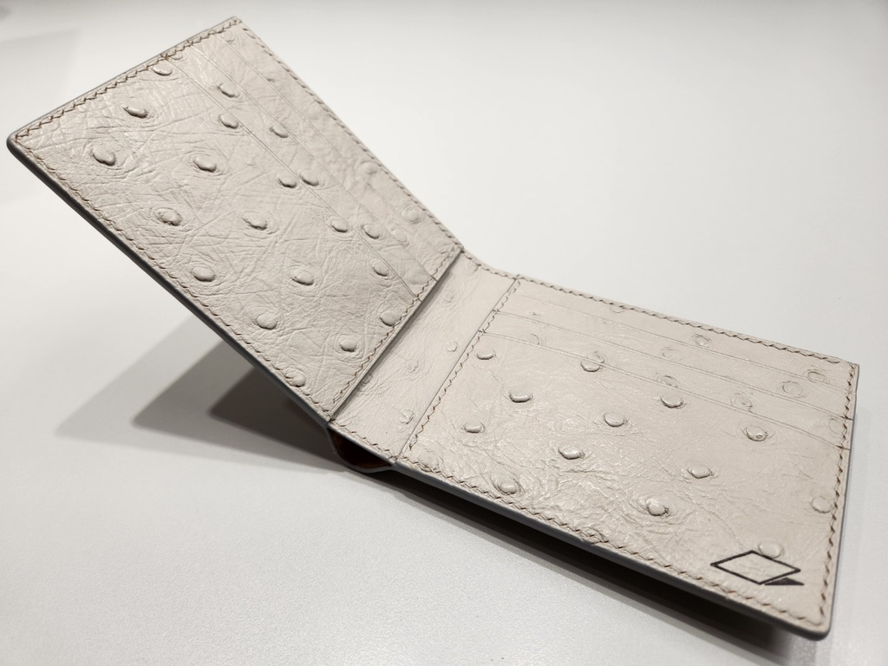
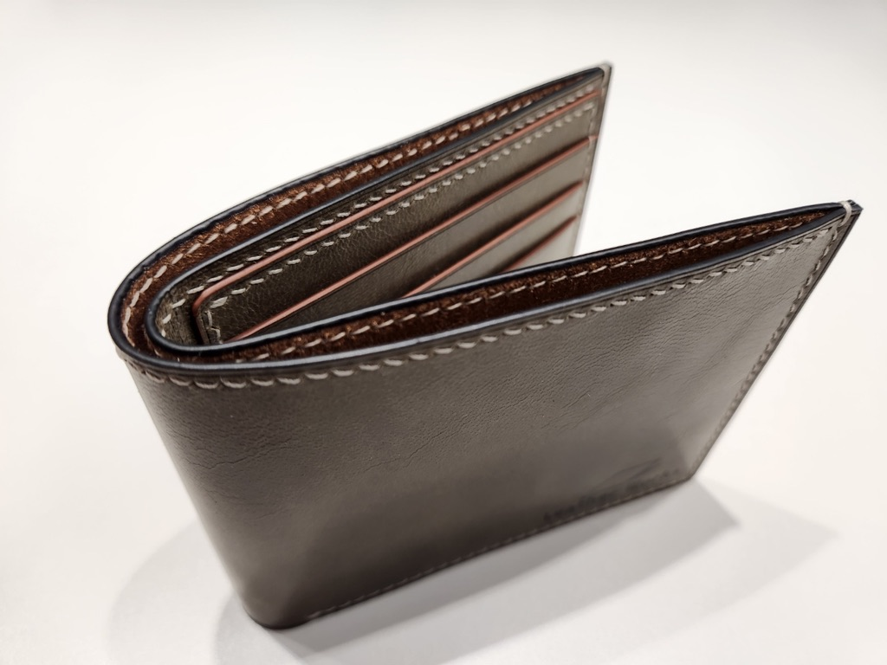

5
여기에 실제 후기를 입력하세요.
작성자 이름 · 가죽공예 경력







실제 완성작
카드 슬롯이 비뚤어지는 게 반지갑의 가장 큰 고민이죠. 슬롯마다 겹치는 순서와 접는 위치가 도안에 표시되어 있어, 접었을 때 각이 반듯하게 잡힙니다.
약 12~18시간
제작 시간
카드 8칸
2단 슬롯 ×4
부품 6개
외피 · 슬롯 · 안감
지폐칸
접어서 수납
한 번 구매하면 몇 개든 계속 만들 수 있어요. 만든 제품은 판매해도 됩니다.
이 도안으로 직접 완성해 본 분들의 이야기입니다.
5
여기에 실제 후기를 입력하세요.
작성자 이름 · 가죽공예 경력
5
여기에 실제 후기를 입력하세요.
작성자 이름 · 가죽공예 경력
5
여기에 실제 후기를 입력하세요.
작성자 이름 · 가죽공예 경력
5
여기에 실제 후기를 입력하세요.
작성자 이름 · 가죽공예 경력
5
여기에 실제 후기를 입력하세요.
작성자 이름 · 가죽공예 경력
5
여기에 실제 후기를 입력하세요.
작성자 이름 · 가죽공예 경력
이 도안으로 완성하셨나요?
완성작 사진과 함께 후기를 남겨 주시면, 확인 후 이 페이지에 소개해 드립니다.
패턴을 무료로 제공받아 작성한 후기는 각 후기에 따로 표시합니다.
후기 글을 채운 카드만 공개 페이지에 보입니다. 별점은 1~5 숫자로 입력하세요(4.5처럼 반 개도 됩니다). 표시는 '구매 확인' 또는 '도안 무료 제공'으로 적어 주세요. 사진은 선택이며, 후기가 3개 이상이면 평균 별점이 자동으로 표시됩니다.
처음 도전하는 사람도, 여러 개 만들어 파는 사람도 쓰기 좋게 설계했습니다.
두 번째 작품
직선 위주 구조라 카드홀더를 만들어 봤다면 충분히 도전할 수 있어요.
선물
누구나 쓰는 기본 반지갑이라 받는 사람 취향을 크게 타지 않습니다.
판매
가장 기본이 되는 지갑 형태라 가죽 색만 바꿔 여러 버전으로 만들기 좋아요.
반지갑에서 가장 헷갈리는 슬롯 순서와 접는 위치까지 도안 위에 모두 표시되어 있어요.
굵은 실선을 따라 자르면 됩니다. 접는 곳의 두께 여유까지 반영된 치수예요.
점선이 그리프를 대는 자리입니다. 외피와 안감의 구멍이 끝까지 맞물리도록 잡았어요.
가운데 선을 기준으로 접으면 양쪽 슬롯 높이가 정확히 맞습니다.
슬롯마다 번호가 있어 1번부터 순서대로 겹치기만 하면 됩니다.
출력 후 이 칸을 자로 재 보세요. 10mm면 크기가 정확합니다.
조립 가이드에 단계마다 사진과 함께 설명되어 있습니다.
A4에 100% 배율로 출력해 부품을 재단하고, 접는 선을 살짝 눌러 표시합니다.
슬롯 B를 번호 순서대로 겹쳐 붙이고 아랫선을 스티치합니다.
안감과 외피 A를 맞대고 둘레를 새들 스티치로 바느질합니다.
접는 선을 따라 모양을 잡고 엣지를 다듬어 마감합니다.
특별한 장비는 필요 없어요. 기본 공구가 있다면 바로 시작할 수 있습니다.
재료
공구
PDF 도안
아크릴 패턴
카드홀더를 한 번 만들어 봤다면 충분합니다. 슬롯 겹침 순서와 접는 선이 도안에 표시되어 있고, 사진 조립 가이드를 순서대로 따라 하면 됩니다.
가지고 계신 그리프(치즐)와 같은 간격을 고르세요. 그리프 날 끝 사이의 간격이 2.7mm · 3.0mm · 3.38mm 중 무엇인지 확인하면 됩니다. 간격이 다르면 맞물리는 면의 구멍 수가 달라지니, 꼭 같은 간격의 도안을 쓰세요. 처음이라 그리프가 없다면 가장 많이 쓰는 3.38mm를 권합니다.
표준 카드 크기(85.6 × 54mm)를 기준으로 슬롯 폭을 잡았습니다. 권장 두께의 가죽을 쓰면 카드가 적당히 잡힙니다.
접는 곳의 두께 여유가 도안에 반영되어 있습니다. 두꺼운 가죽을 쓴다면 접는 선 부분을 살짝 얇게 깎아(피할) 주세요.
PDF는 결제 즉시 받아 집에서 출력해 쓰는 도안입니다. 아크릴 패턴은 투명하고 단단한 실물 패턴이라 종이처럼 닳지 않고, 가죽 위에 바로 대고 여러 번 마킹할 수 있어 반복 제작과 판매용 제작에 좋습니다. 아크릴 패턴에도 PDF 도안이 함께 제공됩니다.
주문 후 영업일 기준 5일 안에 발송합니다. 5만 원 이상 구매하시면 배송비는 무료예요. 함께 드리는 PDF 도안은 결제 즉시 받을 수 있어, 아크릴 패턴이 도착하기 전에도 바로 시작할 수 있습니다.
인쇄 설정에서 ‘실제 크기’ 또는 배율 100%를 선택해 주세요. 도안의 10mm 확인 눈금을 자로 재서 크기를 확인할 수 있습니다.
네. 개인 및 소규모 상업 제작(공방, 플리마켓, 온라인 판매 등)에 사용할 수 있습니다. 패턴 자체의 재배포나 재판매만 금지됩니다.
파일이 열리지 않거나 치수에 문제가 있다면 문의해 주세요. 끝까지 확인해 해결해 드립니다. 다만 PDF는 디지털 파일 특성상 다운로드 후 단순 변심 환불은 어렵습니다.